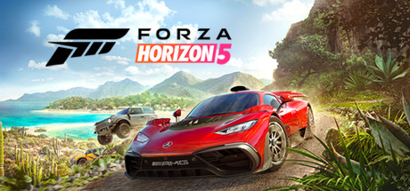
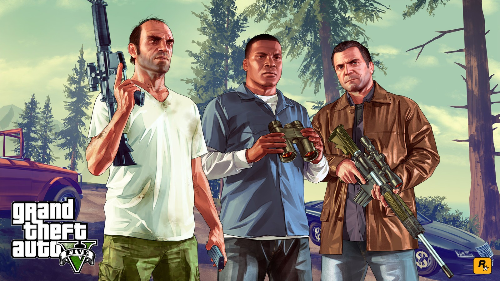
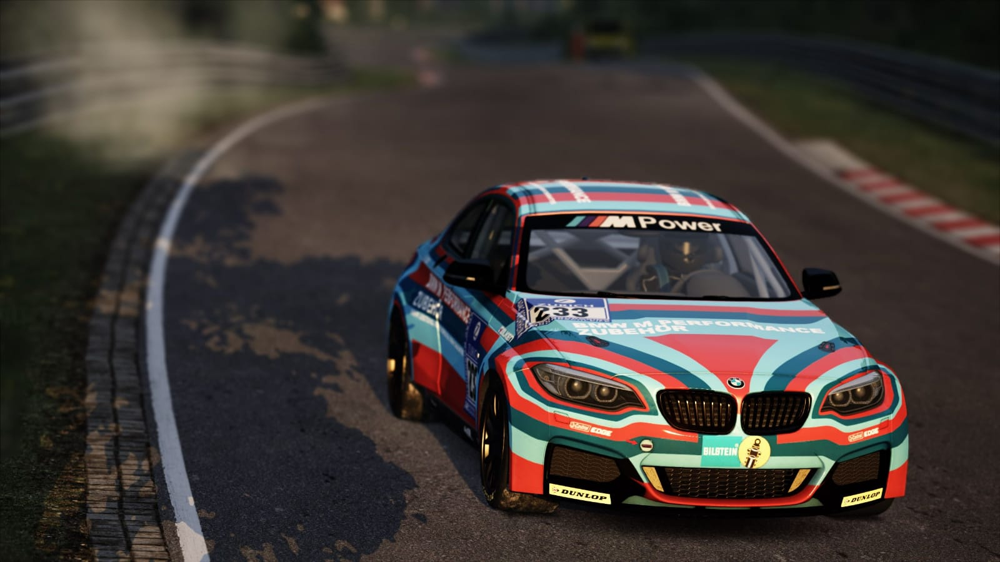
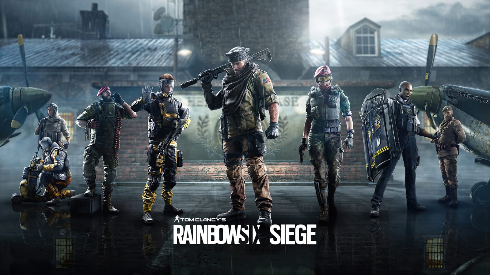
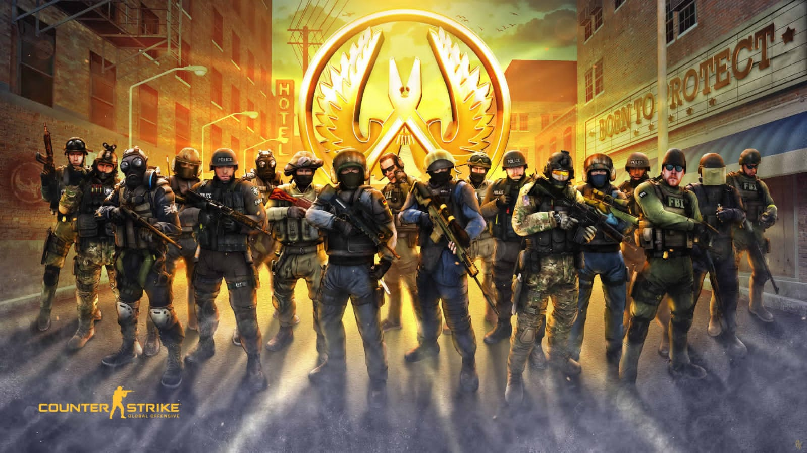
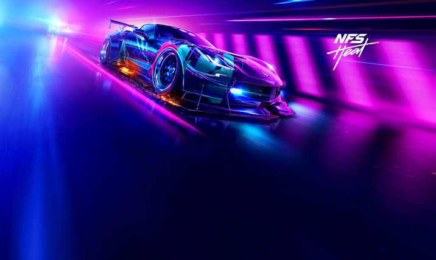
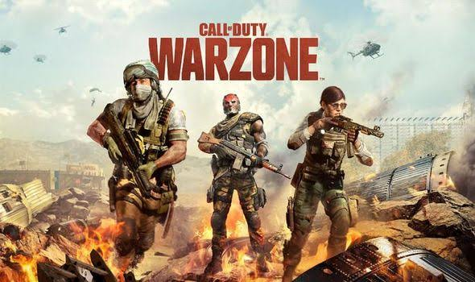
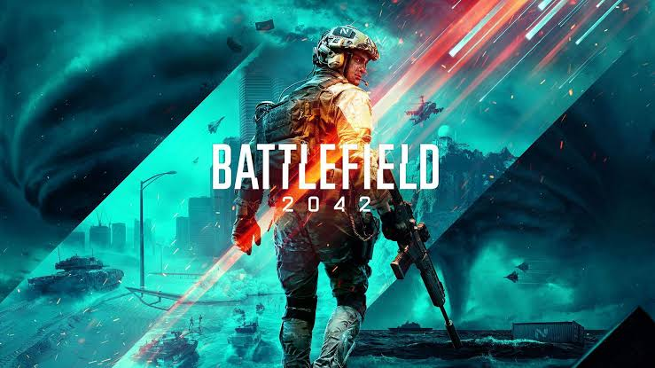
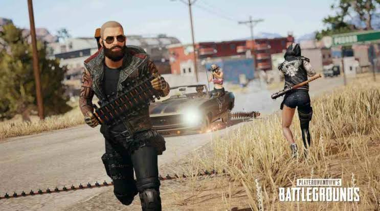

TOP 10 PC GAMES
1.VALORANT
 Valorant (stylized as VALORANT) is a free-to-play online first-person hero shooter
Valorant (stylized as VALORANT) is a free-to-play online first-person hero shooter
developed and published by Riot Games, for Microsoft Windows.
First teased under
the codename Project A in October 2019, the game began a closed beta period with limited access
on April 7, 2020, followed by an official release on June 2, 2020.
The development of the game started in 2014.
Download Link:-https://playvalorant.com/en-us/
2.Forza Horizon 5

Forza Horizon 5 is a 2021 racing video game developed by Playground Games
and published by Xbox Game Studios. It is the fifth Forza Horizon title
and twelfth main instalment in the Forza series. The game is set in a fictionalised representation of Mexico.
It was released on 9 November 2021[a] for Microsoft Windows, Xbox One, and Xbox Series X/S.
The game received critical acclaim and became a huge commercial success upon release;
it launched to over ten million players in its first week of full availability,
the biggest-ever launch for an Xbox Game Studios title.
Download Link:-https://store.steampowered.com/app/1551360/Forza_Horizon_5/
3.Grand Theft Auto V

Grand Theft Auto V is a 2013 action-adventure game developed by Rockstar North
and published by Rockstar Games. It is the seventh main entry in the Grand Theft Auto series,
following 2008's Grand Theft Auto IV, and the fifteenth instalment overall.
Set within the fictional state of San Andreas, based on Southern California,
the single-player story follows three protagonists—retired bank robber Michael De Santa,
street gangster Franklin Clinton, and drug dealer and gunrunner Trevor Philips—and their attempts to commit heists
while under pressure from a corrupt government agency and powerful criminals.
The open world design lets players freely roam San Andreas' open countryside and the fictional city of Los Santos, based on Los Angeles.
Download Link:- https://store.steampowered.com/agecheck/app/271590/
4.Asseto Corsa

Assetto Corsa (Italian for "Race Setup") is a sim racing video game developed by the
Italian video game developer Kunos Simulazioni.It is designed with an emphasis on a realistic racing experience
with support for extensive customization and moddability. The game was first released through
the Steam Early Access program on 8 November 2013,[1]
and officially left Early Access as final release version on 19 December 2014
Download Link:-https://store.steampowered.com/app/244210/Assetto_Corsa/
5.Tom Clancy’s Rainbow Six : Seigea

Tom Clancy's Rainbow Six Siege is an online tactical shooter video game developed by Ubisoft Montreal and published by Ubisoft.
It was released worldwide for Microsoft Windows, PlayStation 4, and Xbox One on December 1, 2015;
the game was also released for PlayStation 5 and Xbox Series X/S exactly five years later on December 1, 2020.
The game puts heavy emphasis on environmental destruction and cooperation between players.
Each player assumes control of an attacker or a defender in different gameplay modes such as rescuing a hostage,
defusing a bomb, and taking control of an objective within a room.
The title has no campaign but features a series of short, offline missions called, "situations" that can be played solo.
These missions have a loose narrative, focusing on recruits going through training to prepare them for future encounters with the "White Masks",
a terrorist group that threatens the safety of the world.
Download Link:-https://store.steampowered.com/app/359550/Tom_Clancys_Rainbow_Six_Siege/
6.Counter Strike : Global Offensive

Counter-Strike: Global Offensive (CS:GO) is a multiplayer first-person shooter developed by Valve and Hidden Path Entertainment. It is the fourth game in the Counter-Strike series.
Developed for over two years, Global Offensive was released for Windows, macOS, Xbox 360, and PlayStation 3 in August 2012, and for Linux in 2014.
Valve still regularly updates the game, both with smaller balancing patches and larger content additions.
The game pits two teams, Terrorists and Counter-Terrorists, against each other in different objective-based game modes.
The most common game modes involve the Terrorists planting a bomb while Counter-Terrorists attempt to stop them,
or Counter-Terrorists attempting to rescue hostages that the Terrorists have captured.
Download Link:-https://store.steampowered.com/app/730/CounterStrike_Global_Offensive/
7.Need For Speed HEAT

Need for Speed Heat (stylized as NFS Heat) is a 2019 racing video game developed by Ghost Games
and published by Electronic Arts for Microsoft Windows, PlayStation 4 and Xbox One.
It is the twenty-fourth installment in the Need for Speed series and commemorates the series' 25th anniversary.
The game received mixed reviews from critics, who mostly found the game to be an improvement over the 2015 Need for Speed reboot
and Payback but not enough to be a full return to form for the franchise.
Heat was Ghost Games' final game both for the Need for Speed franchise and as a lead developer.
In February 2020, EA shifted development of the franchise back to Criterion Games—the developers of the Burnout series,
Need for Speed: Hot Pursuit (2010) and Need for Speed: Most Wanted (2012)—and
reduced Ghost Games to an engineering studio for the Frostbite engine, reverting their name back to EA Gothenburg.
Download Link:-https://store.steampowered.com/app/1222680/Need_for_Speed_Heat/
8.Call Of Duty : WarZone

Call of Duty: Warzone is a free-to-play battle royale video game released on March 10, 2020, for PlayStation 4, Xbox One, and Microsoft Windows
. A version for the PlayStation 5 and Xbox Series X/S has been announced to be released sometime in the future.
[1] The game is a part of 2019's Call of Duty: Modern Warfare and is connected to 2020's Call of Duty: Black Ops: Cold War and 2021's Call of Duty: Vanguard
(but does not require purchase of either titles) and was introduced during Season 2 of Modern Warfare content.
Warzone is developed by Infinity Ward and Raven Software (the latter later credited as the sole developer following the integration of Cold War's content)
and published by Activision.[2] Warzone allows online multiplayer combat among 150 players, although some limited-time game modes support 200 players.
Download Link:-https://www.callofduty.com/content/atvi/callofduty/warzone/web/en/download.html
9.Battlefield 2042

Battlefield 2042 is a first-person shooter video game developed by DICE and published by Electronic Arts.
The game was released on November 19, 2021,[a] for Microsoft Windows, PlayStation 4, PlayStation 5, Xbox One,
and Xbox Series X and Series S. Unlike recent Battlefield games, Battlefield 2042 is solely multiplayer and does not have a single-player campaign.
It also features support for cross-platform play, a first in the series. Upon release, Battlefield 2042 received mixed reviews from critics.
Download Link:-https://store.steampowered.com/app/1517290/Battlefield_2042/
10.PlayerUnknown's Battlegrounds

PlayerUnknown's Battlegrounds (also known as PUBG: Battlegrounds) is an online multiplayer battle royale game developed and published by PUBG Corporation
, a subsidiary of Bluehole.
The game is based on previous mods that were created by Brendan "PlayerUnknown" Greene for other games,
inspired by the 2000 Japanese film Battle Royale, and expanded into a standalone game under Greene's creative direction.
In the game, up to one hundred players parachute onto an island and scavenge for weapons and equipment to kill others while avoiding getting killed themselves.
The available safe area of the game's map decreases in size over time, directing surviving players into tighter areas to force encounters.
The last player or team standing wins the round.
Download Link:-https://store.steampowered.com/app/578080/PUBG_BATTLEGROUNDS/
THANKS FOR VISITING OUR WEBSITE